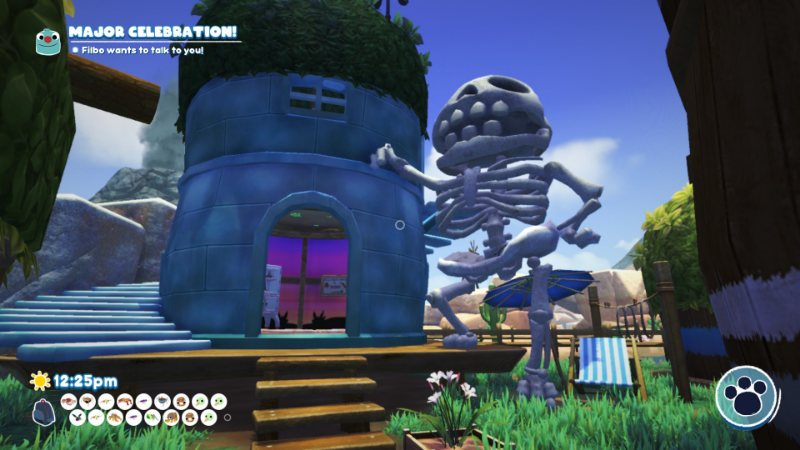
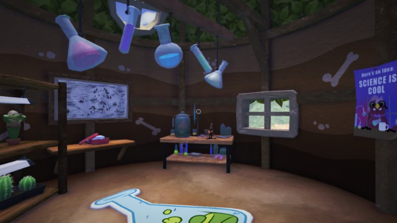
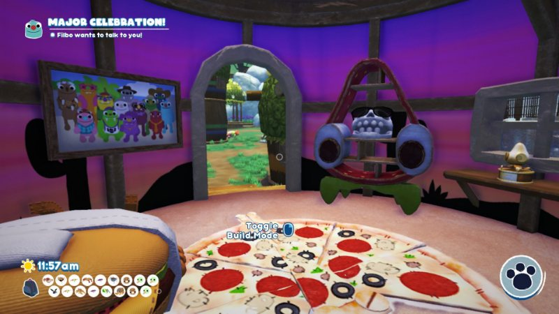
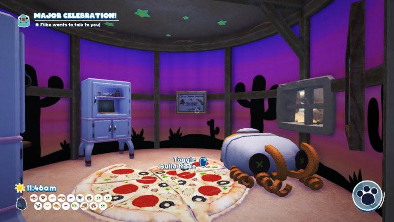
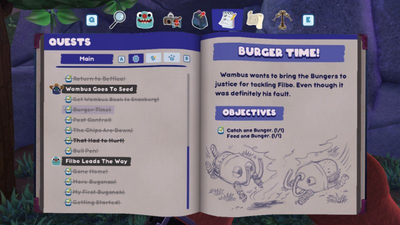

bugsnax
release date:
nov 12, 2020
developer:
young horses
genre/type:
adventure, action
love this game so much
i had such a great time playing it
screenshots
 the followeing are pictures of my in-game crib     the doodles in the quests are so cute
 i had such a great time playing it
i had such a great time playing it
i had such a great time playing it
i had such a great time playing it